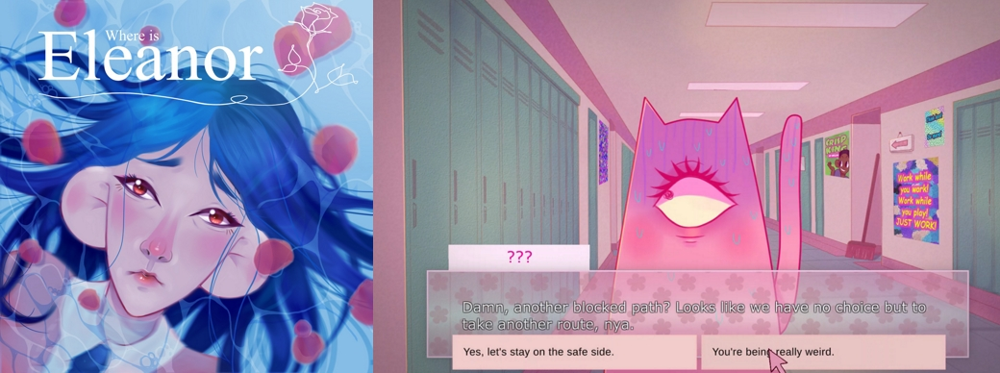

Where is Eleanor Rose? (2019-2020)
The Project
Where is Eleanor Rose? is a 2D top-down adventure game, that addresses the 5 stages of grief and takes place inside of the mind of a teenage schoolgirl.
My Work
As the only programmer I coded every piece of gameplay behaviour.
An essential aspect in game development is to code developer friendly - I made sure that the artists, audio designer were able to drag their content into the unity inspector without ever having to deal with the source code.
Genre
2D Adventure Game, Visual Novel
Platform
Windows
Game Engine
Unity
Programming Languages
C#
Inputs
Keyboard, Mouse
Links
Download Page
Trailer
Website
Devcom Indie Expo 2020
Onono
Social
[What I learned]
[Code Snippets]
[github mit sourcecode]
[Other Links: VDW, Onono, Content Vienna/Gamescom/Devcom]